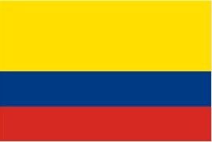
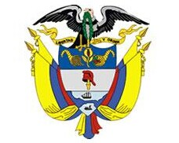
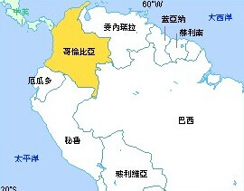

- 哥伦比亚国旗
- 哥伦比亚国徽
- 哥伦比亚志性建筑
- 哥伦比亚地理位置
哥伦比亚概况
哥伦比亚共和国, 在南美洲西北部
人口概况
在杰克逊以南120公里处。人口7, 700(1980年)。是附近生产棉花、谷物、家禽、牛的贸易点和工业中心。开采原油、天然气, 还有服装、家具、纸浆、胶合板等工业。
哥伦比亚经济
自然资源丰富, 煤炭、石油、绿宝石为主要矿藏。已探明煤炭储量约240亿吨, 居拉美首位。石油储量18亿桶, 天然气储量187亿立方米, 绿宝石储量居世界第一位, 铝矾土储量为1亿吨, 铀储量4万吨。此外还有金、银、镍、铂、铁等矿藏。森林面积约4923万公顷。哥伦比亚历史上是以生产咖啡为主的农业国。1999年, 受亚洲金融危机等影响, 经济陷入60年来最严重的衰退。2000年经济开始复苏, 之后, 一直保持低速增长。2003年增速加快, 建筑业持续增长, 电力需求加大, 金融业势头良好, 贷款和私人投资增加, 传统产品出口扩大。哥是拉美重要的旅游中心之一, 旅游业较发达。2003年, 外国游客62万人。主要旅游区有:卡塔赫纳、圣玛尔塔、圣菲波哥大、圣安德列斯和普罗维登西亚群岛、麦德林、瓜希拉半岛、博亚卡等。经济以农业为主, 从业人口占全国劳动力的一半。咖啡产值占农业总产值的三分之一以上, 产量和出口量仅次于巴西, 居世界第二位。其他主要农作物有水稻、玉米、香蕉、甘蔗、棉花和烟草。畜牧业较发达, 牧场占总面积28.9%。矿业以开采石油和煤为主, 是拉丁美洲主要产金国, 铂产量居世界第四位, 绿宝石产量居世界首位。工业发展较快, 其产值已占国内生产总值的五分之一以上。以制糖、咖啡加工、纺织为主的轻工业占工业总产值的70%以上, 还有冶金、机器制造、汽车装配、水泥、化学、炼油、石油化工等。旅游业有较快发展。输出以咖啡为大宗, 占出口总额的50%以上；次为煤、黄金、石油、香蕉、贵金属以及纺织品、服装、水泥等。花卉出口次于荷兰居世界第二位。进口机器设备、车辆、工业原料和食品等。交通运输以公路为主, 航空运输亦较发达。
外交关系
奉行独立自主、不结盟和多元化的外交政策。外交重点是进一步密切与美国的关系, 加强同拉美地区特别是周边国家的合作, 巩固同欧盟的传统联系, 增进与亚太国家的交流合作。
经贸往来
1980年2月7日, 哥伦比亚同中国建交。2009年8月31日至9月2日, 哥伦比亚共和国外交部长海梅·贝穆德斯·梅里萨尔德对华进行访问。